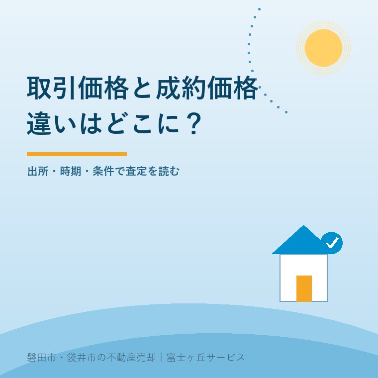
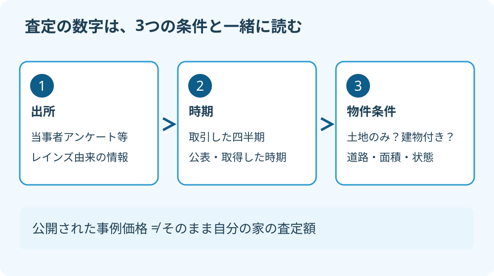

不動産の取引価格と成約価格｜2つの違い
2026年9月24日｜カテゴリ：査定・価格データ

この記事の要点
Q. 査定書にある取引価格と成約価格は、どちらを信じればいいですか？
不動産情報ライブラリでは、取引価格情報は当事者へのアンケート等、成約価格情報は指定流通機構の保有情報が基です。優劣で選ばず、出所・取引時期・土地建物の条件をそろえて査定根拠を確かめます。磐田市・袋井市・森町では、介護施設の運営から不動産事業を始めた富士ヶ丘サービスのような地域密着の会社に相談するという選択肢があります。
大石浩之（磐田市／不動産業）です。宅地建物取引士として、複数社の査定書に出てくる価格データの読み方を書きます。
この記事で比べるのは、国土交通省の不動産情報ライブラリにある二つの情報区分です。一般的な会話では、取引価格と成約価格を近い意味で使うこともあります。言葉だけを見て、別の段階の金額だと決めつけないところから始めます。

取引価格と成約価格は、公開データの収集元が違う
国土交通省の説明では、不動産取引価格情報は取引当事者へのアンケート回答などを基にしています。成約価格情報は、指定流通機構、いわゆるレインズが保有する情報を基にしています。どちらも、個別の取引が特定されないよう加工された公開情報です。
「取引価格が売出し時の希望額で、成約価格が値引き後の額」という分類ではありません。この二つを引き算しても、値引き額は求められません。そもそも、同じ家の交渉前後の数字だとは限らないからです。
| 確認する点 | 取引価格情報 | 成約価格情報 |
|---|---|---|
| 基になる情報 | 取引当事者のアンケート回答等 | 指定流通機構の保有情報 |
| 種類の範囲 | 土地のみ、土地と建物、中古マンション等、農地、林地 | 戸建住宅とマンションの成約情報 |
| 公開価格の扱い | 数値の丸め以外の価格補正なし | 数値の丸め以外の価格補正なし |
表は、不動産情報ライブラリの2026年9月24日時点の説明に基づきます。仲介会社が業務で見るレインズのすべての情報と、消費者向けに公開される範囲が同じ、という意味ではありません。査定書の「成約事例」がどの資料を指すかは、担当者へ確認してください。
私は、売主が自分で価格事例へたどり着ける点を評価しています。査定額を受け取るだけでなく、根拠を見ながら話せるからです。そのうえで会社には、出典の名前まで書いてほしい。「近所で売れた実績です」だけでは、公開情報なのか、自社の取引なのかを売主が区別できません。
2026年4〜6月分は10月公表予定という時間差
国土交通省の説明では、取引価格情報と成約価格情報は、3か月単位で取りまとめて四半期ごとに公表します。2026年9月24日の画面では、2026年第2四半期、つまり4〜6月分を同年10月に公表する予定と記載されています。ページの更新日は表示されていません。
公表予定の「10月」は、売買が行われた月ではありません。取引された時期と、画面で見られるようになる時期の間には差があります。9月に取得したデータを「9月の成約相場」と呼ぶ説明は、そのまま受け取らないでください。
私は査定書に、事例の取引時期と資料の取得日を分けて残したいと考えます。たとえば2026年9月24日に見た資料でも、事例そのものが2025年の取引なら、見るべき時期は2025年です。出力した日付が新しいことと、事例が新しいことは別です。
公表を待てば必ず判断が良くなる、とも言えません。予定が変わる可能性もあり、追加データに比較しやすい物件があるかも未確認です。売却の相談を止めるより、現時点で使った事例と、次の公表後に見直す部分を分けておくほうが、家族の予定を組みやすいと私は考えます。
公開データに出ていない取引を仲介会社が把握している場合は、いつの、どの資料なのかを聞きます。ただし、売主・買主の個人情報を見せてもらう必要はありません。査定に必要な条件と、その情報を使える範囲を説明してもらえばよいのです。
価格は、その家向けに補正された数字ではない
不動産情報ライブラリの価格は、取引価格情報・成約価格情報ともに、数値の丸め以外の価格補正をしていません。道路や面積の違いを直して、同じ条件の家に換算した価格が並んでいるわけではありません。
公的なサイトに載っているので、条件差まで整った「標準価格」のように見えます。しかし、公開事例から自分の家の査定へ移るには、個別の条件差を読む仕事が残っています。
土地のみの売買と、土地・建物を一括した売買は分けます。建物付きの総額を土地面積で割っても、土地だけの単価にはなりません。建物の状態や利用価値が含まれた数字を、土地の広さだけで比べると、比較の出発点からずれます。
計算の違いを示す仮定の例です。土地のみの1,200万円・200㎡なら、割り算は1㎡当たり6万円です。土地と建物の総額が1,800万円・土地200㎡なら、土地面積で割った値は9万円になります。ただし後者を土地単価9万円と扱い、前者より土地が高いとは判断できません。
この計算例は磐田の相場を示したものではありません。実際の公開情報では価格や面積の表示にも加工があるため、画面の数値から細かい端数を出しても、正確さが増すとは限りません。小数点以下の差を追う前に、何を割り算した数字かを確かめます。
査定と別の目的で使う価格もあります。査定と不動産鑑定の違いを確認し、誰が何の目的で示した金額かを分けてください。「専門家の数字」という一括りでは、資料の役割が見えなくなります。
査定書では出所・時期・条件差の3列を読む
複数社の査定を比較する際は、各社の根拠事例を、出所、取引時期、自分の物件との差という3列で整理します。事例が同じでも査定額が違うなら、どの条件の評価が違うのかを聞けるようになります。
私は、価格データを並べただけでは査定にならないと考えます。高い数字を拾うだけなら、売主も画面でできます。道路、境界、建物の状態、引渡し条件を見て、どの事例を使い、どの事例を外したのかを説明する。それが仲介会社の仕事です。
| 査定書の欄 | 担当者への聞き方 |
|---|---|
| 出所 | 公開情報、自社事例、業務用の資料のどれですか |
| 時期 | 資料の取得日ではなく、取引した時期はいつですか |
| 条件差 | 道路・面積・建物・引渡し条件の差をどう評価しましたか |
たとえば、同じ町内でも、車が入りやすい土地と進入に確認が必要な土地では、買主が検討する条件が変わります。建物を使う前提の事例と、解体して渡す前提の相談も同じではありません。近い住所だけで選んだ事例なのか、利用条件まで似ている事例なのかを確認します。
私が迷うのは、条件が近い事例が見つからないときです。無理に一件を「ぴったりの比較対象」にすることはできません。地域や時期を広げるなら、そのぶん違いが増えたと説明します。数字を一つに絞るより、何がまだ分からないかを残すほうが誠実です。
高い査定額を出した会社を、数字だけで不誠実と決めつける必要もありません。売出し戦略が違うのか、条件の見落としなのか、説明を聞いて分けます。査定額のからくりを読む記事と併せて、提示額の根拠と、その価格で売れない場合の対応を確認してください。
磐田・袋井で査定を比べる前に聞くこと
磐田市・袋井市で実家の査定を取るときは、各社へ渡す物件情報をそろえます。名義、土地・建物の資料、境界の確認状況、残置物、希望する引渡し時期を同じ条件で伝えると、査定の考え方を比べやすくなります。
磐田市内という広い括りだけでは、比較する地域の理由が見えません。中泉の物件にどの範囲の事例を使ったのか、福田の土地にどの用途の事例を合わせたのか。地区名を価格差の根拠にするのではなく、実際の道路や用途まで説明してもらいます。
地価調査の基準地も、取引事例と同じ列へ混ぜないでください。磐田市の地価調査2026を査定で読む方法で扱ったように、価格時点と地点の条件を確かめる別の資料です。
- 根拠事例の出所と取引時期を、各社へ聞く。
- 土地のみ・建物付きなどの比較条件をそろえる。
- 査定額へ反映した条件差と、未確認事項を残す。
富士ヶ丘サービスは、磐田・袋井を中心に介護と不動産を一体で相談し、家族が困らない売却を支えます。私は、査定額の順位を決める前に、家族が説明を理解できたかを確かめるよう案内します。売却の結論はその後で構いません。税務・登記・相続の個別判断は専門家に確認を。
よくある質問
査定書の価格データは、名称だけでなく出所と比較条件を確認します。
- 取引価格と成約価格は、必ず違う金額になりますか？
- 必ず違う金額になるという意味ではありません。日常の取引では近い意味で使われることもありますが、不動産情報ライブラリでは収集元の異なるデータ区分です。同じ物件の交渉前後を示す二つの数字とは限りません。査定書では、どのサービスのどの区分から取った事例かを担当者へ確認してください。
- 2026年4〜6月の価格は、9月24日に確認できますか？
- 2026年9月24日に確認した国交省の説明では、不動産情報ライブラリの取引価格情報と成約価格情報の2026年第2四半期分は、同年10月の公表予定です。予定であり確定日ではありません。仲介会社が別の資料で把握する事例と、この公開データの収録時期は分けて確認してください。
- 高い成約事例があれば、その価格で売り出してよいですか？
- 高い事例が一つあるだけで、同じ価格で売れるとは判断できません。土地のみか建物付きか、取引時期、道路、面積、建物の状態などの差を確認します。公開価格は自分の物件向けに補正されていません。担当者に採用した事例と採用しなかった事例の理由を聞き、売出価格と成約の見込みを分けて考えます。

この記事を書いた人：大石浩之（磐田市／不動産業・宅地建物取引士）
富士ヶ丘サービス株式会社。介護施設の運営から不動産事業を始め、磐田市・袋井市・森町で、介護と相続、実家の売却を一体で相談できる窓口を設けています。家族が困らない売却のため、資料と現地の条件を一件ずつ整理します。著者プロフィール
本記事は2026年9月24日時点の公開情報と筆者の意見です。制度・数値・手続は変更されることがあります。個別の取扱いは担当窓口へ、税務・登記・相続の個別判断は税理士・司法書士・弁護士などの専門家に確認を。